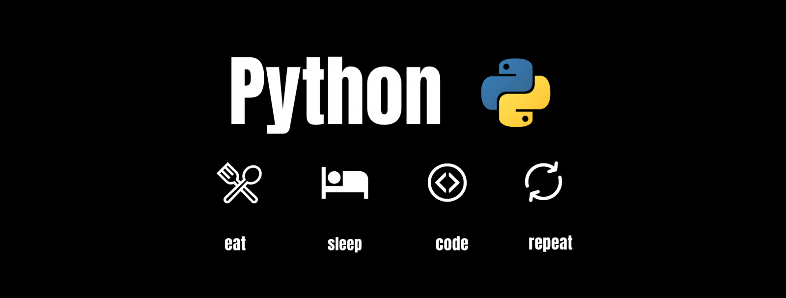
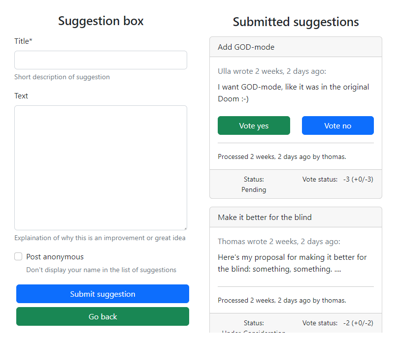
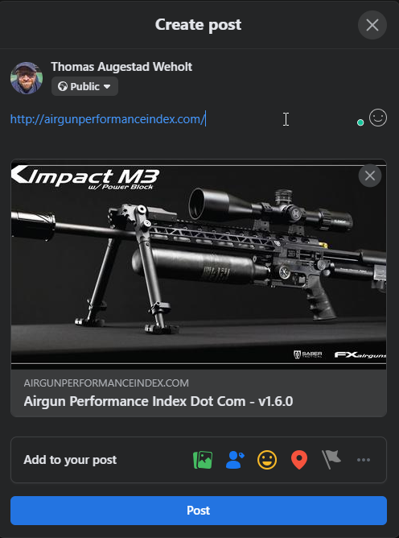

Some people do sudoku, and others do crossword puzzles, some even knit to pass the time. I write code in python as a hobby. I also code at work, but that’s in C#, another programming language, which is an ok language, but it’s not Python.
I love programming Python, mainly using the Django web framework. Since I first encountered Python in 1997, I’ve been completely in love with that programming language. It’s such a nerd thing to say, but what did you expect navigating to this page?

Most of what I do never end up being used. I just do it for fun. Some code does though, like my project Massiviu (formerly known as DSE), which added bulk_create and bulk_update to Django before Django had any bulk operations of its own. It was actually downloaded several thousand times, and used, among other things, in transferring bank accounts from one system to another. Nowadays the project is replaced by the built-in features in Django, and it’s no longer being maintained.
My other hobby is photography, and I’ve built my own management system for photos a number of times. I’m currently using Capture One for all my Fujifilm photography, but I really hope they add Python scripting support sometime in the future, because who in the world uses Apple Script?? The Capture One developers apparently.
Lately, I’ve been working on a few projects which are actually going to be used in production, although we’re talking about tiny projects.
I created a very simple system for a local skateboard club a few years ago, and the admin wanted to be able to easily send SMS messages to all their members. I tried using Twilio but found a Norwegian company called Sveve.no offering a much easier-to-use API for sending SMS, and I created a small, reusable Django app so now Norwegian Django developers can add SMS functionality in just a few lines of code.

Suggestion-box is another reusable app for Django which features a way for users to propose ideas or improvements and then have a vote on the suggestions. Admins can then comment on whether they’ll implement this or not.
I’m no more fond of ads on the internet than anyone else, but on one of my sites I wanted to be able to display a banner or image from a supporter of that specific site and get metrics on how many times the ad has been shown and how many users who actually clicked the image and was redirected to the promoted site.
This is actually a fork of another GitHub repository, https://github.com/leveille/django-opengraph, which features most of the open graph functionality I needed, but I wanted to simplify the process of getting content based on object instances and added support for the video and audio tag as well.
By adding opengraph tags to your HTML markup it makes it easier to get a nice preview of your pages when you link to them on social media sites like Facebook.

Follow my developer diary over at http://weholt.org/category/developer-diary/.